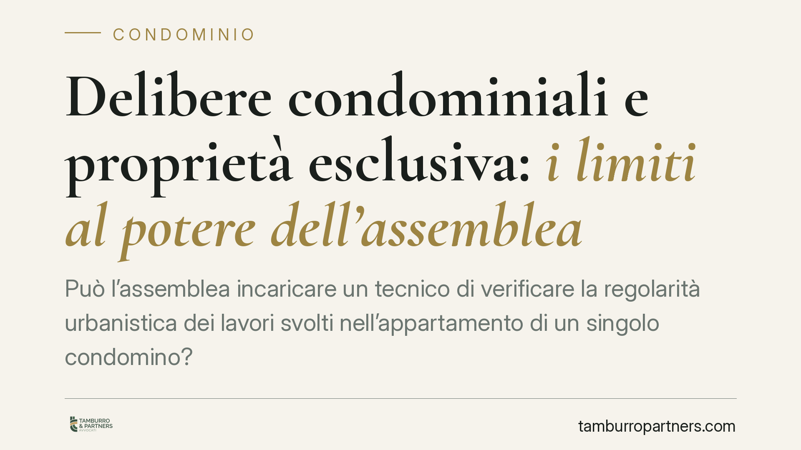

Delibere condominiali e proprietà esclusiva: i limiti al potere dell'assemblea
Può l'assemblea incaricare un tecnico di verificare la regolarità urbanistica dei lavori svolti nell'appartamento di un singolo condomino? La questione tocca il confine tra competenza condominiale e proprietà esclusiva. Una recente pronuncia di merito offre lo spunto per chiarire quando una delibera eccede i poteri dell'assemblea e con quali conseguenze sul piano dell'impugnazione.

Il caso
Un'assemblea condominiale approva una delibera con cui incarica un tecnico di verificare la legittimità urbanistica di opere realizzate all'interno della proprietà esclusiva di un condomino. Non si tratta di parti comuni né di interventi che incidano su di esse: l'oggetto del controllo è un'unità immobiliare privata.
Il condomino impugna la delibera, lamentando che l'assemblea abbia invaso la sfera della sua proprietà individuale. Il tema giuridico è netto: fin dove arriva il potere dell'assemblea e dove inizia il dominio riservato del singolo.
Inquadramento normativo
L'art. 832 cod. civ. attribuisce al proprietario il diritto di godere e disporre della cosa in modo pieno ed esclusivo, entro i limiti dell'ordinamento. Da qui discende lo ius excludendi alios, cioè il potere di escludere i terzi dall'ingerenza sul bene. Il condominio, come ente di gestione, ha competenza sulle parti comuni (artt. 1117 e seguenti cod. civ.) e sugli interessi collettivi dei partecipanti: non sul contenuto della proprietà esclusiva di ciascuno.
Sul piano dei vizi della delibera occorre distinguere con rigore. Secondo l'orientamento consolidato, l'eccesso di potere dell'assemblea — cioè la deviazione dalla causa del rapporto condominiale — integra di regola un'ipotesi di annullabilità ex art. 1137 cod. civ., soggetta al termine di impugnazione di trenta giorni.
La nullità, dopo Cass. Sez. Un. 9839/2021, ha invece confini più ristretti: ricorre nei casi di oggetto impossibile o illecito, di difetto assoluto di attribuzione e — ciò che qui rileva — quando la delibera incide su diritti individuali inviolabili, come il diritto di proprietà esclusiva del singolo condomino. In quest'ultima ipotesi la delibera è nulla perché l'assemblea non ha alcun potere di disporre di un bene che le è estraneo.
Il principio
La delibera che incarica un tecnico di controllare la proprietà esclusiva di un condomino, in assenza di un interesse condominiale concreto e apprezzabile, pone un problema di rapporto con lo ius excludendi alios.
Se l'attività deliberata comporta un'ingerenza diretta sulla sfera del proprietario — ad esempio l'accesso all'immobile o la verifica di opere interne che non interferiscono con le parti comuni — si entra nel terreno della lesione del diritto individuale, con la più grave sanzione della nullità secondo i criteri delle Sezioni Unite. Se invece la delibera resta sul piano della mera deviazione dall'interesse collettivo senza toccare direttamente il bene privato, il vizio tende a configurarsi come annullabilità, con il conseguente termine decadenziale.
La qualificazione non è un dettaglio: dalla corretta collocazione del vizio dipende se l'impugnazione sia soggetta al termine di trenta giorni (annullabilità) oppure proponibile senza limiti temporali (nullità).
Implicazioni pratiche
Resta ferma una distinzione centrale: la regolarità urbanistica di un immobile riguarda il rapporto tra il proprietario e il Comune. Il condominio non è titolare di un potere di vigilanza urbanistica sulle unità private. Un interesse condominiale può emergere solo quando le opere incidano su parti comuni, sulla statica dell'edificio o sul decoro architettonico: in tali casi l'assemblea agisce legittimamente, ma nell'ambito delle proprie attribuzioni.
Per l'amministratore, questo significa valutare con attenzione l'oggetto di ogni delibera che tocchi la sfera privata dei singoli. Per il condomino, significa individuare correttamente la natura del vizio prima di impugnare, per non incorrere in decadenze.
Cosa fare in concreto
- Amministratori: prima di portare in assemblea una verifica che riguardi la proprietà esclusiva di un condomino, accertate che sussista un interesse condominiale concreto (incidenza su parti comuni, statica o decoro) e verbalizzatelo in modo esplicito.
- Amministratori: evitate deliberazioni che prevedano l'accesso o il controllo di unità private senza il consenso del titolare, salvo casi riconducibili alle attribuzioni condominiali.
- Condomini: di fronte a una delibera che ritenete lesiva della vostra proprietà, chiarite subito, con l'assistenza di un legale, se il vizio configuri nullità o annullabilità: la differenza incide sui termini di impugnazione.
- Condomini: nel dubbio sul regime applicabile, agite entro i trenta giorni dalla delibera (o dalla comunicazione, se assenti), per non pregiudicare la tutela nel caso in cui il vizio sia qualificato come annullabilità.
- Entrambi: documentate per iscritto l'interesse condominiale alla base di ogni decisione che sfiori la sfera individuale dei partecipanti.
---
Contributo informativo a cura di Tamburro & Partners - Avv. Giuseppe Tamburro. Non costituisce parere legale.
Ogni condominio ha una storia a sé.
Se gestisci un'amministrazione e vuoi un confronto su una specifica questione condominiale, scrivi allo studio. Ti rispondiamo entro un giorno lavorativo.